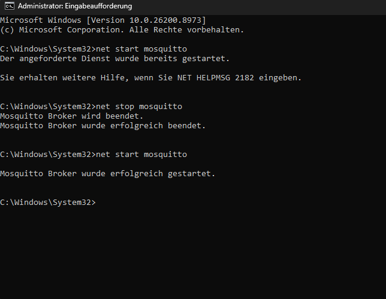
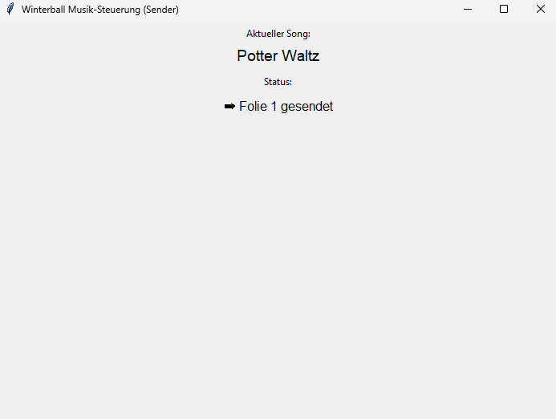
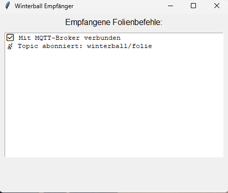
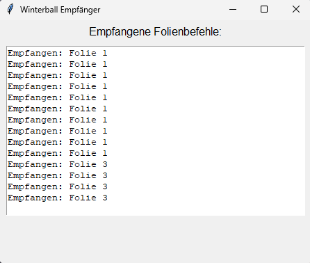

Winterball MQTT
Netzwerk.
Beim Winterball musste die Musik unten in der Aula laufen, während der Beamer und der Präsentations-PC im ersten Stock standen. Um trotzdem Songtitel und Tanzart live synchron anzuzeigen, entstand ein verteiltes System aus zwei PCs, Spotify-Auslesung und einem MQTT-Netzwerk.
Spotify abspielen und aktuellen Song erkennen
Song- bzw. Folieninformation im Netzwerk übertragen
PowerPoint automatisch auf die passende Folie wechseln
Das System wurde für eine reale Veranstaltung an der Schule entwickelt. Es löste das praktische Problem, Musik und Präsentation über zwei Stockwerke hinweg zuverlässig miteinander zu synchronisieren.
Zwei Stockwerke machten ein verteiltes System notwendig.
Die Musik lief unten in der Aula, während der Beamer mit der Präsentation im ersten Stock aufgebaut war. Ein einzelner Rechner war dadurch unpraktisch, weil Musiksteuerung und Folienanzeige nicht am gleichen Ort benötigt wurden.
Benötigt wurde daher eine Lösung, bei der ein Rechner den aktuellen Song erkennt und ein zweiter Rechner daraus die passende Präsentationsaktion ausführt. Genau diese Trennung wurde über MQTT umgesetzt.
Spotify-Wiedergabe für den Winterball unten in der Aula.
PowerPoint zeigte Songtitel und den passenden Tanz wie Tango oder Discofox.
Die Kommunikation wurde sauber in Publisher und Subscriber getrennt.
Der Musik-PC veröffentlichte die relevanten Informationen im MQTT-Netzwerk. Der Präsentations-PC abonnierte diese Nachrichten und leitete daraus die passenden Folienwechsel ab. Dadurch waren beide Systeme entkoppelt und trotzdem synchron.
Als Vermittler diente ein Mosquitto-Broker. Dieses Prinzip machte die Lösung einfach, robust und gut nachvollziehbar.
Der Sender liest den aktuellen Song aus.
Die zugehörige Foliennummer wird als Nachricht veröffentlicht.
Der Empfänger verarbeitet die Nachricht und wechselt die Folie.

Der Sender-PC erkannte den Song und entschied, ob eine passende Folie gesendet werden kann.
Auf dem Musik-PC lief eine eigene Python-Anwendung, die den aktuellen Spotify-Song ausliest. Existierte für den Titel eine Folienzuordnung, wurde die entsprechende Information an das MQTT-Netzwerk gesendet. Andernfalls wurde klar angezeigt, dass für den aktuellen Song keine Folie vorhanden ist.
So blieb jederzeit nachvollziehbar, ob gerade ein Titel nur abgespielt wird oder bereits aktiv an die Präsentation übergeben wurde.

Der Empfänger abonnierte die Befehle und übertrug sie in die Präsentation.
Auf dem Präsentations-PC lief die Empfänger-Anwendung. Sie verband sich mit dem MQTT-Broker, abonnierte das passende Topic und zeigte empfangene Folienbefehle direkt an. Diese Informationen konnten anschließend genutzt werden, um die vorbereitete PowerPoint auf den richtigen Songtitel mit der passenden Tanzart umzuschalten.
Damit wurde aus einer Netzwerk-Nachricht direkt eine sichtbare Änderung im Live-Betrieb der Veranstaltung.

winterball/folie abonniert
Das Projekt verbindet API-Nutzung, Netzwerkkommunikation und Live-Automation.
Technisch interessant war vor allem die Kombination verschiedener Ebenen: Spotify wurde zur Musikerkennung genutzt, MQTT übernahm den Nachrichtentransport, und auf der Empfängerseite wurde daraus eine konkrete Präsentationsaktion abgeleitet. Damit entstand ein kleines, aber sehr anschauliches verteiltes System.
Den damaligen Code habe ich inzwischen zusätzlich an eine neuere Version von paho-mqtt angepasst, sodass das Projekt auch mit aktuellem Stand wieder sauber läuft. Über den GitHub-Link am Ende der Seite kann der Code später direkt eingesehen werden.
Zwei-PC-System
Sender und Empfänger sind räumlich getrennt und erfüllen unterschiedliche Aufgaben.
MQTT
Publisher/Subscriber-Prinzip zur sauberen und entkoppelten Übertragung von Zustandsinformationen.
Python
Eigene Anwendungen für Song-Erkennung, Nachrichtentransfer und Live-Steuerung.
Systemintegration
Verknüpfung von Spotify, Netzwerkkommunikation und PowerPoint in einer realen Veranstaltung.
Ein verteiltes Live-System für Musik und Präsentation.
Das MQTT-Winterballprojekt zeigt, wie mit vergleichsweise einfachen Mitteln eine praktische Live-Lösung entstehen kann: unten Musik, oben Präsentation – verbunden über ein sauberes Netzwerkprinzip. Die Zuschauer sehen Songtitel und Tanzart, während im Hintergrund Sender, Broker und Empfänger zusammenarbeiten.